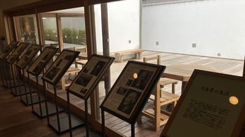
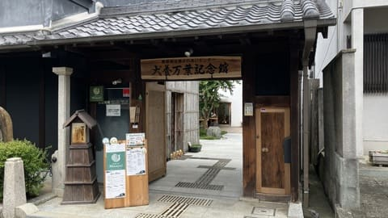
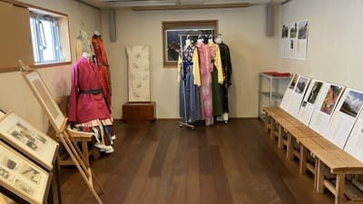

犬養孝氏の業績展示と再現書斎
万葉学者・犬養孝氏の直筆原稿や著書、愛用した遺品を展示。生前の書斎も館内に忠実に再現されています。

南都明日香ふれあいセンター犬養万葉記念館は、全国の万葉故地を自らの足で歩き「歌う万葉学者」として親しまれ、万葉集の普及と研究に生涯を捧げた万葉学者・犬養孝氏の業績を顕彰する記念館です。直筆原稿や再現書斎の展示をはじめ、独特の節回しで詠み上げる「犬養節」の朗唱資料、約8,000冊の蔵書を誇る図書室、併設カフェ「Cafe de Manyo!」などがあり、万葉文化の魅力に親しめるスポットです。
| 開館時間 | 10:00～17:00（最終入館16:30） |
|---|---|
| 休館日 | 毎週月曜日（祝日の場合は翌平日）、年末年始 |
| 料金 | 無料 |
| 所要時間 | 約30～45分 |
| 駐車場 |
犬養万葉記念館駐車場（徒歩すぐ・無料） 飛鳥観光協会 石舞台駐車場（徒歩約7分・普通車500円） |
| アクセス |
近鉄飛鳥駅から徒歩約40分。 「岡寺前」バス停から徒歩約1分 |
| 地図 | 地図はこちら |

万葉学者・犬養孝氏の直筆原稿や著書、愛用した遺品を展示。生前の書斎も館内に忠実に再現されています。

独唱によって万葉歌を詠み上げる有名な「犬養節」の映像・音声資料を鑑賞し、万葉集の歌の心を感じられます。
犬養万葉記念館は、文化功労者であり明日香村名誉村民でもある万葉学者・犬養孝氏（1907～1998年）の文化的業績を顕彰し、万葉文化の発信拠点として開館しました。現在の建物は、大正15年に南都銀行高市郡岡支店として開業した建物を改装し、平成12年4月1日に犬養万葉記念館として開館しました。増改築の際の発掘調査では飛鳥時代の遺構と、漆を詰めた壺約200個が出土しています。犬養孝先生は、昭和30年の三村合併の際に「明日香村」の名を提案した人物でもあります。